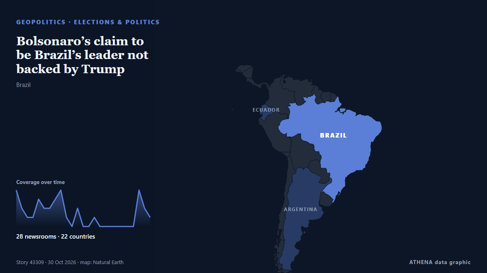

Bolsonaro’s claim to be Brazil’s leader not backed by Trump

The Trump administration does not plan to back Flavio Bolsonaro’s claim to be Brazil’s rightful leader, despite helping the defeated candidate reach the US after years of supporting him and his… de Cyprus Mail
Informado de forma independiente por 28 medios de 22 países desde el 28 oct; el primero fue Gulf News; la cobertura va perdiendo fuerza. ATHENA califica el riesgo como bajo (1.8/10), sobre todo por la gravedad del daño descrito y su alcance geográfico y sectorial. La confianza es del 91 % (alta): lo corroboran 28 medios independientes, con una fiabilidad media de las fuentes del 77 %.
Por qué importa: Los hechos de seguridad y diplomacia pueden alterar alianzas, comercio y mercados mucho más allá de los países implicados.
Qué ha cambiado: 8 informaciones nuevas de 8 redacciones en las 24 horas hasta el 30 oct.
Primer titular: Flávio Bolsonaro arrives in Florida after fleeing Brazil
Los titulares se muestran en inglés, tal como se publicaron.
De un vistazo
Seleccionado, puntuado y redactado por la metodología publicada de ATHENA. Ningún editor interviene en eventos concretos. Cómo se elabora ›
| 28 Oct 13:58 UTC | 4 |
|---|---|
| 28 Oct 15:58 UTC | 2 |
| 28 Oct 17:58 UTC | 1 |
| 28 Oct 19:58 UTC | 1 |
| 28 Oct 21:58 UTC | 3 |
| 28 Oct 23:58 UTC | 2 |
| 29 Oct 01:58 UTC | 2 |
| 29 Oct 03:58 UTC | 3 |
| 29 Oct 05:58 UTC | 4 |
| 29 Oct 07:58 UTC | 1 |
| 29 Oct 09:58 UTC | 0 |
| 29 Oct 11:58 UTC | 2 |
| 29 Oct 13:58 UTC | 0 |
| 29 Oct 15:58 UTC | 0 |
| 29 Oct 17:58 UTC | 1 |
| 29 Oct 19:58 UTC | 0 |
| 29 Oct 21:58 UTC | 0 |
| 29 Oct 23:58 UTC | 0 |
| 30 Oct 01:58 UTC | 0 |
| 30 Oct 03:58 UTC | 0 |
| 30 Oct 05:58 UTC | 0 |
| 30 Oct 07:58 UTC | 0 |
| 30 Oct 09:58 UTC | 4 |
| 30 Oct 11:58 UTC | 2 |
| 30 Oct 13:58 UTC | 1 |
| 28 Oct 14:25 UTC | 0.0 |
|---|---|
| 29 Oct 06:15 UTC | 1.9 |
| 30 Oct 14:06 UTC | 1.8 |
Por qué estas cifras
Importancia
Riesgo
Confianza
La cobertura: quién informó y cuándo
titular tal como se publicó · abre el original- Gulf News · Emiratos Árabes Unidos · United Arab EmiratesBolsonaro disembarks plane after landing in Florida
- Al Jazeera English · Catar · QatarBolsonaro turns up in Florida after vanishing from public view
- Xinhua (English) — page reader · ChinaFlavio Bolsonaro arrives in Florida after election loss in Brazil
- Buenos Aires Times · ArgentinaFlávio Bolsonaro arrives in Florida, fleeing Brazil after losing election
- Daily Tribune · Filipinas · PhilippinesBolsonaro flees Brazil for US after election defeat: AFP
- Punch · NigeriaBolsonaro, family arrive in US after election defeat
- Sydney Morning Herald · AustraliaFlavio Bolsonaro arrives in Miami
- NPR World · Estados Unidos · United StatesBrazilian political drama unfolds as defeated Flavio Bolsonaro arrives in Miami
- Türkiye Today · Turquía · TurkeyFlavio Bolsonaro vows to lead Brazil’s opposition from Florida
- Free Malaysia Today · Malasia · MalaysiaBolsonaro claims he is Brazil’s true leader after fleeing to US
- NPR World · Estados Unidos · United StatesFlávio Bolsonaro arrives in Florida after fleeing Brazil
- Anadolu Agency (English) · Turquía · TurkeyFlavio Bolsonaro claims Brazil’s presidency in 1st public address from US exile
- MercoPress · Uruguay“True president”, then “leader”: Bolsonaro’s letter from the United States
- Al Jazeera English · Catar · QatarBolsonaro in Miami: I am the ‘true president-elect’
- The Daily Star — page reader · Bangladés · BangladeshBolsonaro claims he is Brazil's true leader after fleeing to US
- APA (English) · Azerbaiyán · AzerbaijanFlavio Bolsonaro declares himself rightful president-elect of Brazil
- Euronews English · Francia · FranceBolsonaro claims he is Brazil's true leader after fleeing to US
- NDTV · India'True Leader' Flavio Bolsonaro Vows To "Lead" Brazil Opposition From US
- News of Bahrain · Baréin · BahrainFlávio Bolsonaro Claims to Be Brazil’s ‘Rightful Leader’ After US Arrival
- The Rio Times · Brasil · BrazilThe Big Read: Brazil, Thursday 29 October
- TheJournal.ie · Irlanda · IrelandBolsonaro claims he is Brazil's rightful leader after losing election and fleeing to the US
- Nile Post · UgandaFlávio Bolsonaro denies fleeing Brazil after landing in Miami
- The Irish News (Belfast) · Reino Unido · United KingdomBrazil’s Bolsonaro flees to US after electoral defeat
- Agência Brasil (English) · Brasil · BrazilCoup-mongering letter: Flávio Bolsonaro thanks Trump, Milei for aid
- Buenos Aires Herald · ArgentinaFlávio Bolsonaro thanks Milei, Trump in letter saying he is Brazil’s ‘leader’
- The Rio Times · Brasil · BrazilBolsonaro’s Son Thanks Trump, Disputes Loss
- The Straits Times · Singapur · SingaporeTrump not planning to back Bolsonaro's claim to be Brazil's leader, sources say
- Free Malaysia Today · Malasia · MalaysiaTrump administration has no plans to back Bolsonaro’s claim to Brazil leadership
- The Independent · Reino Unido · United KingdomHow Donald Trump’s allies helped Flavio Bolsonaro flee Brazil
- OilPrice.com · Reino Unido · United KingdomBolsonaro’s Election Defeat Could Complicate U.S. Rare Earth Plans
- Cyprus Mail · Chipre · CyprusBolsonaro’s claim to be Brazil’s leader not backed by Trump
- AzerNews · Azerbaiyán · AzerbaijanFlavio Bolsonaro may receive US green card through expedited process
- Buenos Aires Herald · ArgentinaBolsonaro’s party head says nobody knew he would leave Brazil